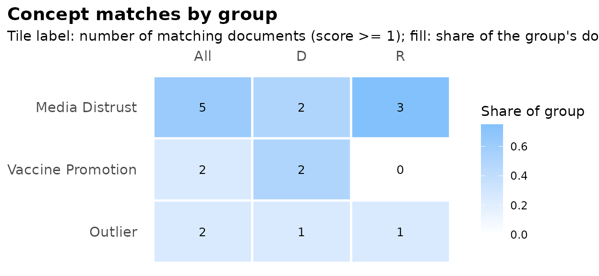

lloomr is an R implementation of the LLooM
concept-induction algorithm (Lam et al., 2024, CHI; Python package
text_lloom). From a collection of texts, it induces
interpretable concepts — each a short name plus a
one-sentence inclusion criterion — and then scores every document
against every concept.
The pipeline:
- Distill — extract salient quotes ([distill_filter()], optional) and compress to bullet points ([distill_summarize()]).
- Cluster — embed bullets, reduce with UMAP, cluster with HDBSCAN ([cluster_texts()]).
- Synthesize — an LLM proposes named concepts per cluster ([synthesize_concepts()]).
- Review — remove weak concepts, merge overlaps, select the best ([review_concepts()]).
- Score — rate every document against every concept on a 5-point scale ([score_concepts()]).
- Refine / loop — drop generic or rare concepts ([refine_concepts()]), find uncovered documents ([loop_docs()]).
LLM calls go through ellmer chat objects, so any supported provider works; responses are constrained by structured output schemas, not parsed out of free text.
The session pipeline
The chunks below are not evaluated in this vignette (they call LLM
APIs); they show the canonical workflow. With an
OPENAI_API_KEY set, they run as-is.
library(lloomr)
# df has one row per document, with columns "text" and "doc_id"
sess <- lloom_session(df, text_col = "text", id_col = "doc_id")
# Estimate cost before spending anything
lloom_estimate_gen_cost(sess)
# Distill -> cluster -> synthesize -> review; activate the best 8 concepts.
# `seed` steers generation toward a topic of interest (optional);
# `sample_n` generates concepts from a sample while scoring stays full.
sess <- lloom_gen(sess, seed = "media trust", max_concepts = 8, sample_n = 200)
sess$concepts
# Score every document against the active concepts
sess <- lloom_score(sess)
score_df <- lloom_results(sess)
# Time, tokens, and dollars per step
summary(sess)Every step is also a standalone function on plain data frames
(distill_summarize(), cluster_texts(),
synthesize_concepts(), …) — the session is a convenience,
not a requirement.
Choosing your LLM (provider and models)
The model decision is made when you create the
session (or, for standalone operators, via their
chat argument) — lloom_gen() and
lloom_score() deliberately take no model argument; they use
what the session holds. You choose the provider by choosing the ellmer
constructor:
# One model for everything — OpenAI, Anthropic, Gemini, or local:
sess <- lloom_session(df, "text", "doc_id",
chat = ellmer::chat_openai(model = "gpt-5.2", echo = "none"))
sess <- lloom_session(df, "text", "doc_id",
chat = ellmer::chat_anthropic(model = "claude-sonnet-4-6", echo = "none"))
sess <- lloom_session(df, "text", "doc_id",
chat = ellmer::chat_ollama(model = "llama3.3", echo = "none")) # local
# Or mix per step — cheap for high-volume distill/score, capable for
# synthesis (this mirrors the package defaults):
sess <- lloom_session(df, "text", "doc_id",
distill_chat = ellmer::chat_openai(model = "gpt-5.4-nano", echo = "none"),
synth_chat = ellmer::chat_openai(model = "gpt-5.2", echo = "none"),
score_chat = ellmer::chat_openai(model = "gpt-5.4-nano", echo = "none"))If you pass nothing, the defaults are gpt-5.4-nano (distill, score)
and gpt-5.2 (synthesis), which require OPENAI_API_KEY.
One caveat: clustering uses OpenAI embeddings by default regardless of your chat provider (some providers, like Anthropic, have no embeddings API). To go fully non-OpenAI, supply your own embedding function:
sess <- lloom_session(df, "text", "doc_id",
chat = ellmer::chat_anthropic(model = "claude-sonnet-4-6", echo = "none"),
embed_fn = function(texts) my_embedding_matrix(texts)) # any fn: texts -> matrixBring your own concepts (scoring a human codebook)
Concept generation is optional. If you already have a codebook — theory-driven categories, concepts from a previous study, or hand-edited output of an earlier run — you can use lloomr purely deductively: write the concepts yourself and score every document against them. Each concept just needs a name and a yes/no inclusion-criterion question:
codebook <- new_concepts(
name = c("Economic Anxiety", "Media Distrust"),
prompt = c(
"Does the text express concern about economic conditions?",
"Does the text express distrust toward news media?"
),
active = TRUE
)
chat <- ellmer::chat_openai(model = "gpt-5.4-nano", echo = "none")
score_df <- score_concepts(df, "text", "doc_id", codebook, chat,
get_highlights = TRUE)The same works inside a session — skip lloom_gen()
entirely and add concepts by hand:
sess <- lloom_session(df, "text", "doc_id")
sess <- lloom_add_concept(sess, "Economic Anxiety",
"Does the text express concern about economic conditions?")
sess <- lloom_add_concept(sess, "Media Distrust",
"Does the text express distrust toward news media?")
sess <- lloom_score(sess)And for mutually exclusive categories, [assign_topics()] accepts a plain character vector of topic names — no concept objects needed at all.
Multi-label scores, single-label topics
Scoring is multi-label: each (document, concept) pair is rated independently, so a document can match several concepts or none. When a mutually exclusive partition is needed, freeze a topic set and use one of:
# Forced-choice LLM classification (labels constrained to your topic set)
assignments <- assign_topics(df, "text", "doc_id", sess$concepts, chat)
# Or: free, deterministic argmax over existing scores
slotted <- slot_by_score(score_df, "doc_id", threshold = 1)Visualizing results
[lloom_vis()] draws the concept-by-group heatmap (the R replacement for the Python package’s interactive matrix widget). It needs only a scored session, so we demonstrate with a small synthetic one — no API calls:
docs <- data.frame(
doc_id = as.character(1:8),
text = paste("document", 1:8),
party = rep(c("D", "R"), each = 4)
)
concepts <- new_concepts(
name = c("Media Distrust", "Vaccine Promotion"),
prompt = c("Distrusts media?", "Promotes vaccines?"),
active = TRUE
)
# A synthetic score grid (in practice: lloom_score() / score_concepts())
score_df <- expand.grid(
doc_id = docs$doc_id, concept_name = concepts$name,
stringsAsFactors = FALSE
)
score_df$concept_id <- concepts$id[match(score_df$concept_name, concepts$name)]
score_df$text <- docs$text[match(score_df$doc_id, docs$doc_id)]
score_df$score <- c(1, 1, 0, 0, 1, 1, 1, 0, # Media Distrust
0, 1, 1, 0, 0, 0, 0, 0) # Vaccine Promotion
score_df$rationale <- ""
score_df$highlight <- ""
score_df$concept_seed <- NA_character_
sess <- lloom_session(docs, "text", "doc_id",
distill_chat = "unused", synth_chat = "unused",
score_chat = "unused")
sess$concepts <- concepts
sess$score_df <- score_df
lloom_vis(sess, slice_col = "party")
The underlying tidy matrix is available via [concept_matrix()] for custom plots, and [lloom_export()] produces a per-concept evidence table (criteria, prevalence, highlight quotes).
Saving your results
The score table is a plain data frame — one row per (document, concept) pair — so saving it is one ordinary line:
readr::write_csv(lloom_results(sess), "scores.csv")That CSV has everything: document IDs, concept names, scores, the model’s rationales, and highlight quotes.
For analysis you usually also want the wide version — one row per document, one column per concept — to join onto your main dataset. [scores_wide()] does the pivot and sanitizes concept names into valid column names (continuing with the synthetic scores from above):
wide <- scores_wide(score_df, "doc_id")
wide
#> # A tibble: 8 × 3
#> doc_id Media.Distrust Vaccine.Promotion
#> <chr> <dbl> <dbl>
#> 1 1 1 0
#> 2 2 1 1
#> 3 3 0 1
#> 4 4 0 0
#> 5 5 1 0
#> 6 6 1 0
#> 7 7 1 0
#> 8 8 0 0
# The mapping from concept names to column names:
attr(wide, "concept_names")
#> Media Distrust Vaccine Promotion
#> "Media.Distrust" "Vaccine.Promotion"Joining the scores back onto your data is then a regular merge — with the row-count checks that any merge deserves:
stopifnot(nrow(wide) == nrow(docs))
merged <- dplyr::left_join(docs, wide, by = "doc_id")
stopifnot(nrow(merged) == nrow(docs))
head(merged, 3)
#> doc_id text party Media.Distrust Vaccine.Promotion
#> 1 1 document 1 D 1 0
#> 2 2 document 2 D 1 1
#> 3 3 document 3 D 0 1Finally, two one-liners for whole-analysis persistence:
# Everything at once: scores (long + wide), concepts, evidence table,
# and the full session object
lloom_write(sess, "results/")
# Or just the session; chat objects survive and keep working after reload
saveRDS(sess, "results/session.rds")
sess <- readRDS("results/session.rds") # later, in a fresh R sessionFurther reading
- Lam, M., et al. (2024). Concept Induction: Analyzing Unstructured Text with High-Level Concepts Using LLooM. CHI 2024. https://doi.org/10.1145/3613904.3642830
- Upstream Python package: https://github.com/michelle123lam/lloom